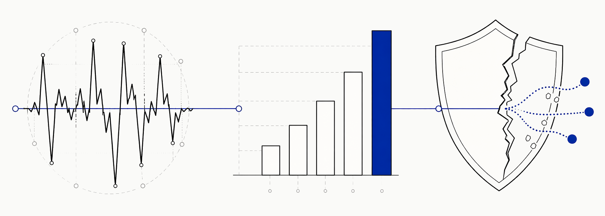
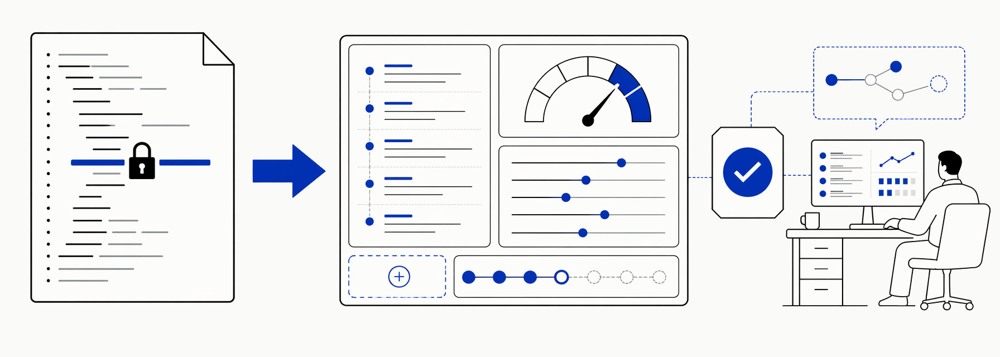
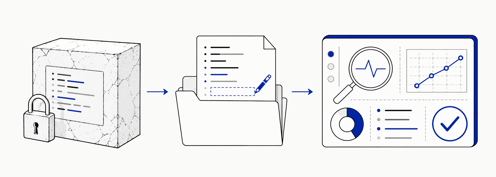

AI Knowledge · Beginner Series
Day 04
Indigo Porcelain
每天吃透一个
AI 知识点
LLMOps
大模型运维体系
为什么同一个模型,别人用起来效果炸裂,你用起来平平无奇?
LLMOPS · 从能跑到可控
AI Native · 004
Indigo Porcelain
LLMOps
大模型运维体系
为什么同一个模型,别人用起来效果炸裂,你用起来平平无奇?
打个比方

好厨子(模型)只是第一步。采购、品控、反馈、菜单迭代 —— 这些"后厨管理"做不好,厨子再厉害也白搭。
典型症状

输出忽高忽低 · 同样的 prompt,昨天给出漂亮回复,今天却出错。
成本悄悄飙涨 · 没人盯 token 消耗,月底账单出来才发现超预算两倍。
安全问题频发 · 用户绕过 prompt,模型说出不该说的话,事后才知道没过滤层。
某电商 AI 客服

硬编码 prompt
可配置 + 可监控
今天检查一件事

答案是 A?把 prompt 从代码里拿出来,就是引入 LLMOps 的第一步。